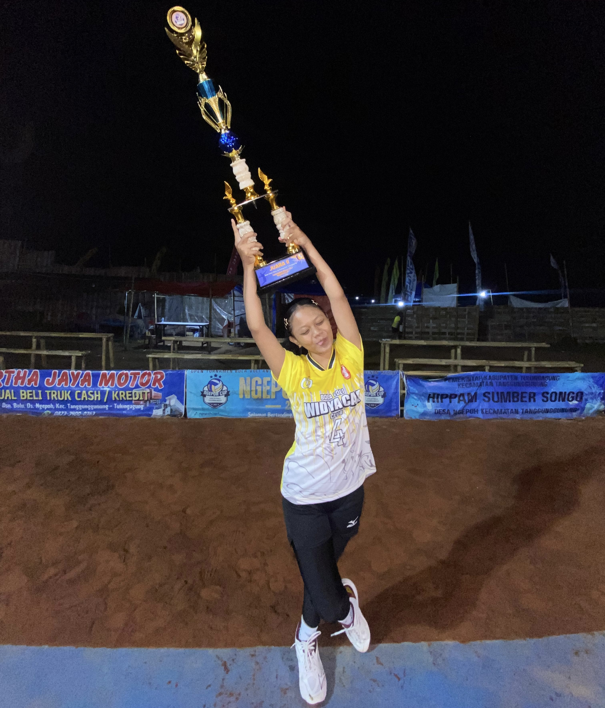

FRAGMENTS OF FLORIS
Halo semuanya..
Kenalin, nama lengkap aku Vanessa Floris, tapi kalian bisa panggil aku Vaness atau Ecca aja supaya lebih akrab. Aku aslinya dari kota Tulungagung.
Kesibukan aku saat ini lebih banyak ke latian volly atau nari kadang juga masih sempet buat latian renang juga. Di sela-sela waktu luang, aku orangnya suka banget sama yang namanya main sama temen-temenku apalagi kalau soal gosip ataupun hanya sekedar main kemana-mana. Rasanya seru aja kalau bisa ngelakuin hal-hal itu sama orang yang kita nyaman
Aku orangnya senang banget bisa ketemu teman-teman baru dan belajar hal-hal baru juga dari kalian semua. Jadi, jangan sungkan buat sapa aku atau ajak ngobrol ya kalau kita ketemu lagi. Dan aku akan sedikit bercerita tentang hobi aku, karena aku bingung jika ingin menceritakan hal lain di hidupku.

POWER, PASSION, AND POINT
Jadi disini aku ingin sedikit menceritakan tentang honiku dimasa luang. Aku sebenarnya tak terlalu pandai bercerita tapi aku akan berusaha menceritakannya sebaik mungkin.Aku mempunyai hobi bermain volly. Aku suka volly dari aku kelas 3 SD, tetapi dulu masih suka nonton aja, apalagi kalau pertandingan volly nasional PROLIGA. Hingga akhirnya aku memutuskan belajar volly pada saat aku kelas 6 SD. Jujur saja pada waktu itu aku cukup sulit untuk beradaptasi di hobi baruku. Karena sebelumnya hobiku adalah renang. Ada rasa berat hati untuk berhenti renang, karena sudah nyaman dengan lingkungan dan orang-orang disekitarnya. Tapi aku memberanikan diri untuk mencoba hal baru di hidupku. Saat aku mulai ikut club dan mulai mengenal apa itu bola volly, rasa yang sebelumnya aku rasakan, seperti rasa takut untuk mengenal hal baru, rasa kurang percaya diri, serta rasa takut tidak punya teman ditempat baru semua itu sirna. Aku mendapat banyak teman yang menyenangkan. Tetapi aku bertahan di club tidak lama, hanya sekitar 3 tahun saja. Karena ada satu dan lain hal. Aku sempat berhenti volly sekitar 3 bulanan, hingga aku bertemu seseorang yang mengajak ku untuk gabung volly di tim nya. Dan saat itu aku menyetujuinya sampai sekarang.
SAAT GERAK MENJADI BAHASA
Menari bukan sekadar hobiku; bagiku, menari adalah sebuah cara untuk berbicara ketika kata-kata tak lagi mampu mewakili perasaan. Ketertarikanku pada dunia seni sudah tumbuh sedari aku kecil, namun perjalananku untuk mendalami tari tradisional secara serius baru dimulai saat aku menginjak kelas 3 SD. Hingga detik ini, kecintaan itu tetap hidup dan bahkan tumbuh semakin kuat di dalam diriku.
Ada alasan mendalam mengapa aku memilih untuk setia pada jalur tari tradisional:
Menjaga Warisan Luhur: Aku percaya bahwa budaya adalah akar yang harus terus dilestarikan. Tari tradisional bagiku adalah warisan berharga yang memadukan keindahan gerak dengan makna filosofis serta nilai sejarah yang sangat mendalam.
Bercerita Lewat Tubuh: Setiap gerakan yang aku bawakan bukan hanya soal kelenturan fisik semata. Bagiku, setiap lekuk gerak adalah sarana untuk bercerita tentang identitas, menjaga adat istiadat, dan menjadi bentuk penghormatan tulus kepada para leluhur.
Identitas di Tengah Zaman: Melalui tari tradisional, aku merasa tidak hanya sedang melestarikan sebuah seni pertunjukan. Aku merasa sedang menjaga kekayaan identitas bangsa agar tetap bernapas dan tetap hidup meskipun dunia terus berubah mengikuti perkembangan zaman.

SIMPULAN
Bagi aku, menari dan bermain bola voli adalah kombinasi hobi yang harmonis karena mampu menyatukan aspek estetika seni dengan semangat sportivitas yang tinggi. Menari memiliki peran penting bagiku dalam melatih kelenturan tubuh, keseimbangan, serta menjadi ruang ekspresi kreatif yang bersifat personal dan emosional. Di sisi lain, olahraga bola voli memberikan tantangan yang berbeda dengan fokus pada kekuatan fisik, ketangkasan reaksi, dan pentingnya membangun kerja sama tim yang solid di lapangan. Secara lebih mendalam, kedua aktivitas ini memberikan manfaat yang saling melengkapi bagi pengembangan diriku, di mana menari mengasah kepekaan terhadap irama dan detail gerakan, sementara bola voli menempa mental pantang menyerah serta kemampuan berkomunikasi dalam tekanan pertandingan. Dengan menekuni keduanya, aku tidak hanya mendapatkan kebugaran fisik yang menyeluruh, tetapi juga membentuk karakter yang disiplin, kreatif, dan mampu beradaptasi dengan baik dalam dinamika kelompok maupun pengembangan potensi diri.